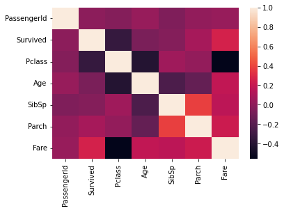

I will build my personal model for the Titanic Disaster famously hosted on Kaggle. To begin, I will provide a brief description of the objective of the competition.
The objective of this Kaggle competition is successfully predict how many passengers survived Titanic disaster. A dataset is provided with various variables. The target/response/independent variable is a binary response variable describing whether the passenger survived (1) or perished (0).
I use the R statistical software as well as Python to develop the models.
As is typically provided by Kaggle. Two datasets in csv formats are available to download.
The training set consists of 891 observations with 10 predictor/dependent variables and 1 independent variable “Survived".
The test set consists of 418 observations with 10 predictor/dependent variables, the missing variable is the independent “Survived".
The overall predictor/dependent variables are as follows:
To begin the investigation, I will use the Anaconda Navigator to run the Spyder IDE. Some of the preliminary code I will run is presented in order below. This code consists of importing the data, and then merging the training data frame and test data frame into a single data frame. This is done in case I’d like to modify some variables later on. This way, I can execute the changes into the merged data set instead of executing the changes in the training and test set individually.
Some of the preliminary code I will run is presented in order below. This code consists of importing the data, and then merging the training data frame and test data frame into a single data frame. This is done in case I’d like to modify some variables later on. This way, I can execute the changes into the merged data set instead of executing the changes in the training and test set individually. After merging the data set, the first thing I’d like to evaluate is a correlation matrix. This will tell me if any two variables are highly correlated with each other. Which could influence any feature engineering we may like to do later.
corr = df_merge.corr()
sns.heatmap(corr, xticklabels=corr.columns.values, yticklabels=corr.columns.values)

By observing the figure, variables in the diagonal are highly correlated which is expected as it is the same variable. Focusing on the independent variable of “Survived”, we can see some variables that stand out:
There are a few reasons why these ma stand out, passenger class could have had an influence on who got priority the enter the life boats.
Age could have an influence as they may have pioritized children. One thing to note is that only variables shown on the correlation matrix are the integers.
Typing in the following code for the Training Set we see some variables are missing.
titanic_TrainData.dtypes